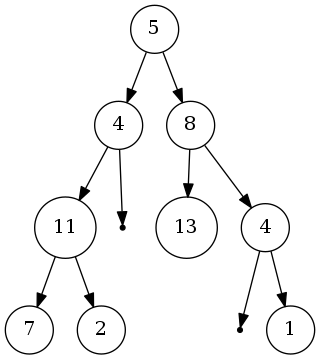

关于二叉树遍历的一道思考题¶
偶然在网上看到一道关于二叉树的面试题目, 就尝试着做了一下. 题目如下: 给出一二叉树, 判断从顶到底段数据之和是否与目标数字相等.
示例:

返回1, 表示可以找到一个叶子节点并且从根节点到此节点的值的和等于22.
需要我们来判断根节点到叶节点的路径中, 经过的节点之和是否有与所给定的数字22相等的路径.
只能通过遍历二叉树来实现, 遍历二叉树的三种次序也只能使用先序遍历, 中序和后序都不便于处理类似路径问题.
在二叉树的遍历算法中常用的有递归算法和带有栈的非递归算法, 这里使用带有父节点的非递归算法. 二叉树节点中引入父节点也是和栈一样在回溯时获取父节点, 保存路径, 二者本质无差别.
先定义节点结构体:
5 6 7 8 9 10 | typedef struct _node_s {
int val;
struct _node_s *parent;
struct _node_s *left;
struct _node_s *right;
} node_t;
|
然后根据先序遍历的规则写出遍历器:
51 52 53 54 55 56 57 58 59 60 61 62 63 64 65 66 67 68 69 70 71 72 | node_t *preorder_iterator(node_t *node) {
if (node == NULL)
return NULL;
if (node->left != NULL) {
return node->left;
} else if (node->right != NULL) {
return node->right;
} else {
node_t *parent;
while (node != NULL) {
parent = node->parent;
if (parent == NULL)
break;
if (parent->right != NULL && parent->right != node)
return parent->right;
node = parent;
}
return NULL;
}
return NULL;
}
|
60-69行为关键的回溯代码, 规则是当某一个父节点有右孩子且父节点不是从右孩子的路径回溯表明右孩子还没有遍历过, 则返回右孩子.
例如图中节点7已经没有左孩子和右孩子了, 下一步应该是回溯到其父节点11, 再获取到节点2. 当遍历到节点1时,
很明显已经没有节点可以遍历了, 往上回溯, 每个节点都是其父节点的右孩子, 已经遍历过了, 直至父节点为NULL, 遍历结束.
构造二叉树的过程省略, 见源代码1. 使用如下的代码先输出先序遍历的结果来看看遍历的过程是否正确:
74 75 76 77 78 79 80 | void preorder_printer(node_t *root) {
node_t *node;
for (node = root; node != NULL; node = preorder_iterator(node)) {
fprintf(stdout, "%d ", node->val);
}
fprintf(stdout, "\n");
}
|
编译后输出如下:
>>> ./a.exe
5 4 11 7 2 8 13 4 1
遍历的结果是正确的. 下面在遍历过程中加入计算过程:
82 83 84 85 86 87 88 89 90 91 92 93 94 95 96 97 98 99 100 101 102 103 104 | node_t *preorder_calc(node_t *node, int *sum) {
if (node == NULL)
return NULL;
if (node->left != NULL) {
return node->left;
} else if (node->right != NULL) {
return node->right;
} else {
node_t *parent;
while (node != NULL) {
parent = node->parent;
*sum -= node->val;
if (parent == NULL)
break;
if (parent->right != NULL && parent->right != node)
return parent->right;
node = parent;
}
return NULL;
}
return NULL;
}
|
基本过程与遍历完全相同, 只是在回溯过程中减去了节点的值, 在遍历时加上节点的值.
>>> gcc -g binary-tree-iterator-non-recursion.c
>>> ./a.exe
5 4 11 7 2 8 13 4 1
leaf node: 7, path sum: 27
leaf node: 2, path sum: 22
leaf node: 13, path sum: 26
leaf node: 1, path sum: 18
第一篇博客耽搁了这么久总算完成了.